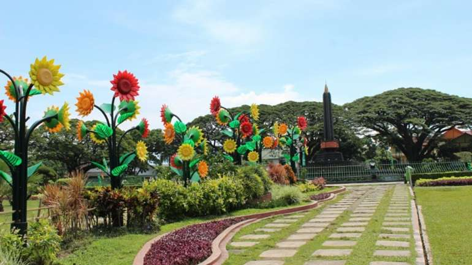

Ini Dia Taman-taman di Kota Malang yang Bisa Bunda Kunjungi Bareng Keluarga!
By : Admin
Tanggal : 31-Agustus-2018
Salah satu alternatif liburan seru bareng keluarga yang hemat adalah dengan berkunjung ke taman kota.
Dan ternyata kota Malang punya banyak referensi taman-taman cantik yang bisa bunda kunjungi bareng keluarga tercinta.
Penasaran dimana aja taman-tamannya? Langsung cek referensi berikut yuk:
Alun-alun Kota Malang
Alun-alun kota Malang juga merupakan iconic kota Malang, katanya sih belum afdol ke Malang kalau belum mampir ke alun-alunnya.
Jika berkunjung kesini, bunda dan keluarga bisa dimanjakan dengan suasana yang hijau loh. Selain itu banyak fasilitas yang bisa
bunda nikmati di taman ini, misalnya arena bermain anak, toilet, jogging track, arena skateboard, bangku taman, sampai tempat
menyusui bayi. Suasana malam harinya juga gak kalah indahnya loh bunda, dengan pemandangan air mancur berwarna-warni yang berlatar
belakang Masjid Agung Malang membuat suasana alun-alun kota Malang semakin syahdu.
Taman Cerdas Trunojoyo
Berlokasi di depan Stasiun Kota Baru, Taman Trunojoyo bisa bunda jadikan sebagai alternatif liburan hemat bareng si kecil.
Taman kota yang satu ini memiliki ciri khas dengan keberadaan patung singa yang menjadi ikon dari klub sepakbola, Arema. Selain
itu Taman Trunojoyo memiliki suasana yang rindang dan sering menjadi lokasi bersantai warga Malang bersama keluarganya.
Jam berkunjung di Taman Trunojoyo adalah maksimal jam 22.00 WIB saja nih bun, jadi waktu yang paling tempat berkunjung ke
taman ini bareng keluarga adalah pagi atau sore hari.
Taman Slamet
Selain menjadi spot favorit anak muda, taman yang satu ini juga menjadi taman favorit keluarga loh bun,
karena lokasinya yang sangat menarik untuk berfoto-foto. Lokasi-lokasi foto favorit tersebut adalah Lorong Enam Gunung,
area pergola, dan photobooth bertuliskan Welcome to Taman Slamet. Lokasi taman ini terletak di Jl. Slamet yang tidak jauh dari
Jl. Ijen.
Taman Singha Merjosari
Taman yang berlokasi di Merjosari ini, memiliki pemandangan yang tidak kalah indah dengan taman-taman lainnya di kota Malang.
Fasilitas yang diberikan di taman ini cukup lengkap loh bunda, ada sepeda udara, toilet, gazebo, jogging track dan sarana olahraga
yang bisa bunda dan keluarga gunakan secara gratis.
Merbabu Family Park
Taman ini sangat cocok untuk bunda kunjungi bersama keluarga tercinta. Berlokasi di Jl. Merbabu, taman seluas 3.924 meter persegi
ini memiliki fasilitas hiburan keluarga yang lengkap. Bunda dan keluarga bisa menggunakan fasilitas berupa arena permainan anak,
lapangan futsal, jogging track, arena bermain yang dilengkapi dengan pasir pantai, dan juga tempat duduk yang nyaman.
Alun-alun Tugu
Alun-alun ini berlokasi di depan Balai Kota Malang dan tidak jauh dari Stasiun Kota Baru. Ciri khas pada taman ini adalah
bentuknya yang bundar dan terdapat sebuah tugu di bagian tengahnya, dan juga terdapat kolam teratai yang mengelilingi tugu
tersebut. Pemandangan yang cantik tersebut banyak dimanfaatkan untuk para pengunjung untuk berfoto-foto selfie. Kalau ke Malang
jangan lupa mampir ke iconic kota Malang ini ya bunda.
Nah itu tadi rekomendasi taman-taman cantik di Kota Malang yang bisa bunda kunjungi bersama keluarga.
Kalau berkunjung ke taman-taman tersebut jangan lupa bawa camilan ya bunda. Lapis Malang juga bisa bunda
jadikan camilan saat bersama keluarga loh.